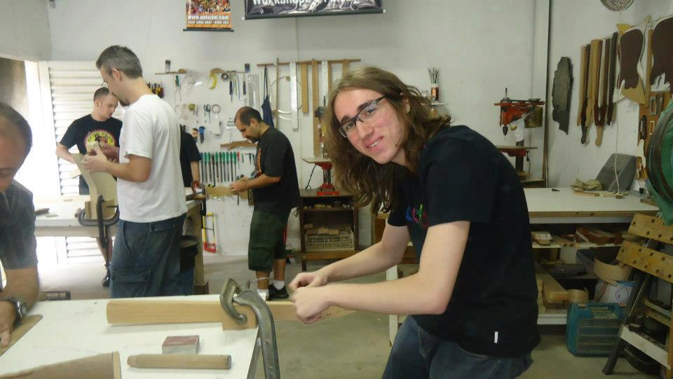

Quem sou eu?
Nerd desde pequeno comecei a jogar o Master System e Nintendo 64 do meu irmão e com isso fui me interessando por tecnologia. Anos depois com o Windows XP entrei para o mundo dos MMO’s onde eu ficava me questionando como poderia existir uma mundo virtual com milhares de jogadores online! Com isso fui aprendendo a fazer manutenção de computadores. Tempos depois comecei a estudar música e luthieria. Onde construí minha própria guitarra, porém hoje em dia isso se tornou apenas um Hobby. Entrei na faculdade de Redes de Computadores onde me formei com nota máxima em meu TCC na Faculdade Impacta junto com meus amigos de classe onde mantemos nosso networking! Nesse meio tempo venho trabalhando com suporte técnico e até mesmo game tester. Porém desde a época da faculdade tenho um interesse bem grande por programação onde venho estudando constantemente esse universo!

Portfólio
Meu projeto de conclusão de curso da turma de redes de computadores da faculdade Impacta 2018, conseguimos nota máxima. JundIT é um grupo formado por 7 estudante de TI, com o intuito de disseminar conhecimento sobre o OpenNebula
Vídeo da apresentação do projeto final, confira nosso canal do youtube para ver mais conteúdos
Outros cursos realizados em outras instituições de ensino, disponibilizado em meu linkedin:
Meus hobbies
Tocar guitarra, luthieria e muita música